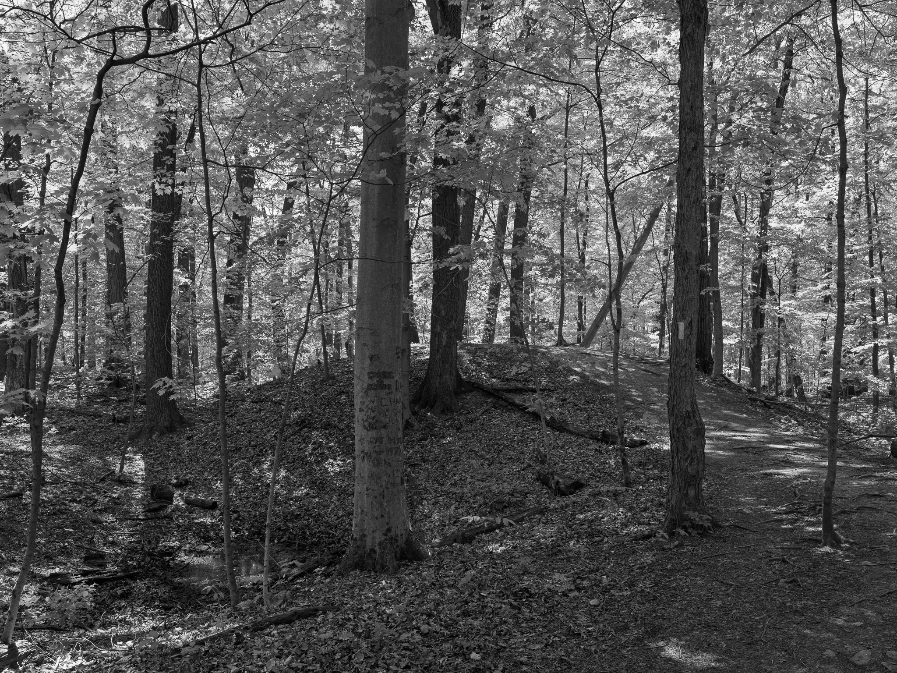
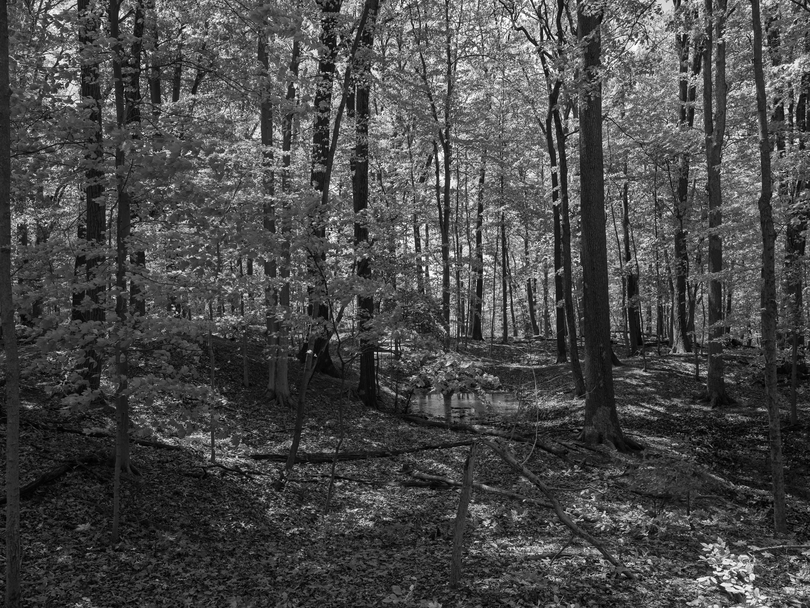
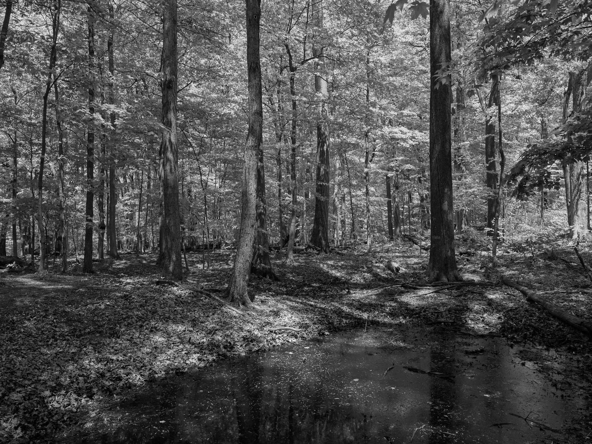
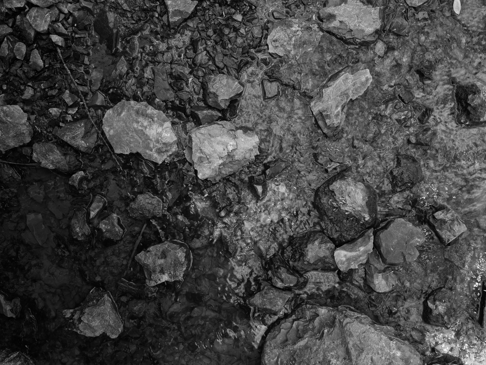

Public Lands Institute
Map
Archive
About
Flint Ridge State Memorial
OH

Flint Ridge State Memorial 1 · 2026-05-13
_DSF2066.jpg

Flint Ridge State Memorial 2 · 2026-05-13
_DSF2071.jpg

Flint Ridge State Memorial 3 · 2026-05-13
_DSF2074.jpg

Flint Ridge State Memorial 4 · 2026-05-13
_DSF2079.jpg
View all 4 images →
← Krejci Dump, Cuyahoga Valley National Park
Octagon Earthworks →